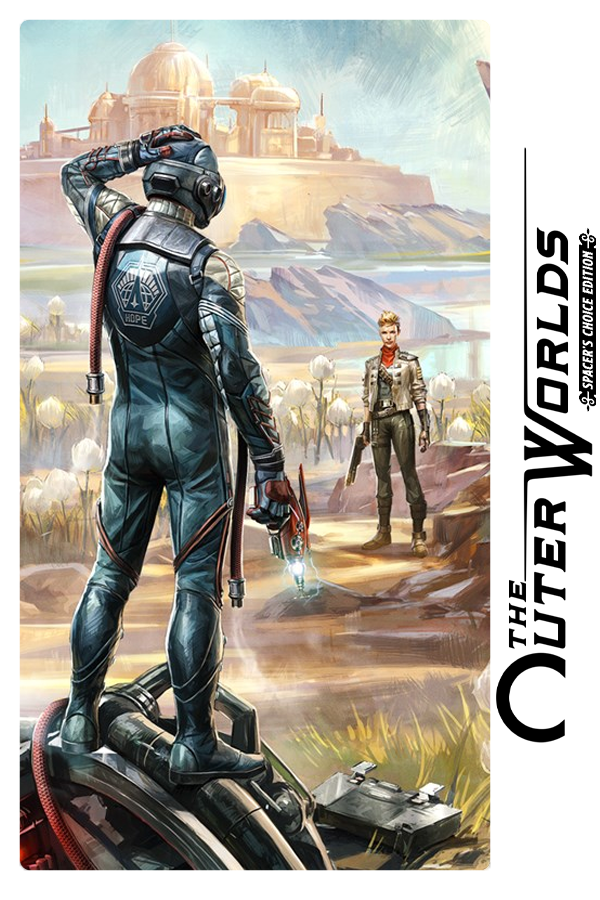

The Outer Worlds: Spacer's Choice Edition
The Outer Worlds: Spacer's Choice Edition
Detalhes
|  | |
| Tempo de jogo | Não Jogado |
| Última Atividade | Nunca |
| Adicionado | 18/04/2024 21:08:51 |
| Modificado | 10/03/2025 0:49:09 |
| Status de Conclusão | Not Played |
| Biblioteca | Epic |
| Fonte | Epic |
| Plataforma | PC (Windows) |
| Data de Lançamento | 07/03/2023 |
| Pontuação da Comunidade | 83 |
| Avaliação da crítica | 90 |
| Pontuação do Usuário | |
| Gênero | Action Adventure Remaster RPG |
| Desenvolvedor | Obsidian Entertainment Virtuos Games |
| Editor | Private Division |
| Funções | Controller Support Full Controller Support Single Player |
| Links | PCGamingWiki GOG Database IGDB SteamDB MobyGames Wikipedia WSGF |
| Tag | [EMT] Video Micro missing [HLTB] 10 a 20 horas |
Descrição
The Outer Worlds: Spacer’s Choice Edition is the ultimate way to play the award-winning RPG from Obsidian Entertainment and Private Division.
Players who already have The Outer Worlds and its associated DLC, Murder on Eridanos and Peril on Gorgon, on Steam can upgrade to The Outer Worlds: Spacer’s Choice Edition for a reduced purchase price.* To enable the upgrade purchasing option, players must be signed into the same Steam Account they used to purchase the base game and its associated DLC and select the “Complete the Bundle” purchasing option.
You’ve tried the rest, now come back for the best! The Outer Worlds: Spacer’s Choice Edition includes the base game and all add-on content as the definitive way to play the beloved RPG from Obsidian Entertainment. This remastered masterpiece is optimized to be the absolute best version of The Outer Worlds… even if you choose to play this critically acclaimed RPG as the absolute worst version of your character.
Lost in transit while on a colonist ship bound for the edge of the galaxy, you awake decades later only to find yourself in the midst of a deep conspiracy threatening to destroy the colony. Explore the various planets and locations of Halcyon, including the mysterious Gorgon Asteroid and delightful distilleries of Eridanos. As you encounter various factions, all vying for power, the character you decide to become will determine how this player-driven story unfolds.
In the corporate equation for the colony, you are the unplanned variable.
Key Features:
• It’s The Outer Worlds you love, but even better: 2019’s hit RPG has been remastered with better graphics, improved performance, additional animations, higher-res environments, and more.
• Increased level cap: A higher level cap means even more ways to build your character from the seven branches of the skill tree.
• The player-driven story RPG: In keeping with the Obsidian tradition, how you approach The Outer Worlds is up to you. Your choices affect not only the way the story develops, they also affect your character build, companion stories, and end game scenarios.
• Lead your companions: During your journey through the furthest colony, you will meet a host of characters who will want to join your crew. Armed with unique abilities, these companions all have their own missions, motivations, and ideals. It's up to you to help them achieve their goals, or exploit them to your own ends.
• Explore the corporate colony: Halcyon is a colony at the edge of the galaxy owned and operated by a corporate board. They control everything... except for the alien monsters left behind when the terraforming of the colony’s two planets didn’t exactly go according to plan. Find your ship, build your crew, and explore the settlements, space stations, and other intriguing locations throughout Halcyon.